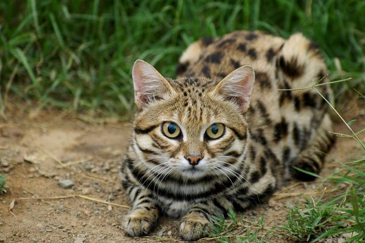
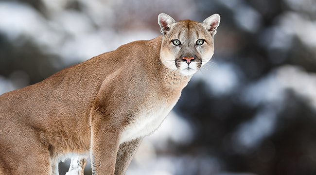
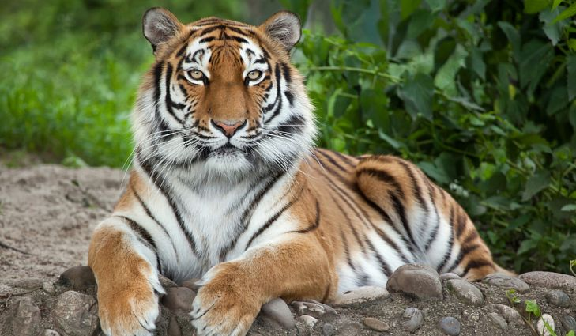

There is quite the large size range between the smallest and largest cat in the wild. The largest cat is the Tiger. The tiger can weigh over 350 kg. The smallest wild cat is thought to be the rusty spotted cat, and a close second is the black footed cat. The rusty spotted cat weighs about 1 kg, while the black footed cat may weigh up to 2.5 kg. Pictured below are the black footed cat, and a cougar, which weighs in at around 120 kg, the fourth largest cat.
There are currently 16 species of big cats considered either vulnerable, endangered, or critically endangered. The most endangered big cat species is the Amur Leopard, of which there are only about 60 remaining in the wild. Many big cats’ habitats are being destroyed for resources. They also face the threat of hunting and poaching for their body parts which some falsely believe have medicinal qualities.
It is no secret that wild animals do not make good pets, yet people across the world still try to keep wild cats as their own. No matter how tame an exotic cat may seem, if you make the wrong move, it can and will attack you based on instinct. Additionally, keeping an exotic cat housed in the wrong setting is bad and harmful to their mood and health.
  